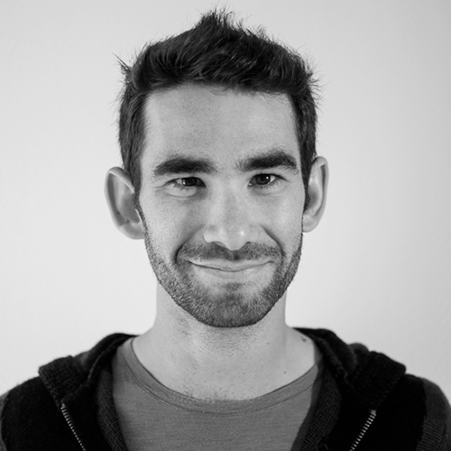

tbernard.02@gmail.com
mobile: 06 25 35 05 93
39 ans, pacsé, 2 enfants
# Thomas BERNARD - Ingénieur DevOps et Cloud
## Présenation
Expert Linux et fervent défenseur de l’open source, j'ai une solide expérience dans la conception, le déploiement et la maintenance de larges infrastructures.
Mon approche DevOps repose sur une grande experience technique et un sens du contact humain afin de créer des systèmes robustes, performants et sécurisés tout en restant évolutifs.
## Expériences professionnelles
Jan 2014 - Present
### Administrateur système DevOps et Cloud
__Atol Conseils et Développement (Gevrey-Chambertin)__
Embauché pour créer l’activité ‘hosting’ dans le but d’héberger les applications développées par l’entreprise à destination de nos clients.
D’une cinquantaine de serveurs il y a 12 ans, l’activité héberge aujourd’hui plus de 1600 machines virtuelles réparti sur 3 clouds.
**Concéption, gestion et mise à jour de nos trois clouds privés**
* Basés sur les technologies Openstack et Ceph déployées sur sur plus de cinquante serveurs physiques dans différents datacenter.
* Gestion quotidienne des clouds (mise à jour, maintenance, veille technologique, etc.)
* Déploiement des outils d'architecture nécessaire : supervision , sauvegarde, métrologie/telemetry, outils de gestion de parc
* Rédaction des procédures internes, gestion des PRA, etc.
**Approche devops pour l'intégration et industrialisation des applications clientes**
* Utilisation massive de puppet et ansible pour l'industrialisation et le déploiement et docker pour le packaging des applications.
* Colaboration étroite avec les équipes de développement (architecture, intégration, performance tuning, reporting, etc.)
En plus de mes activités principales, je suis également très impliqué dans la vie interne de l'entreprise en étant formateur docker et git depuis plusieurs années et en participant régulierement aux animations techniques de l'entreprise (podcast, presentation technique)
Jan 2013 - Jan 2014
### Administrateur système et réseau
__Metanext, SSII en mission chez SFR (Paris la défense)__
* Gestion des plateformes WEB de pré-production et de production SFR. Parc constitué de 300 serveurs RHEL5 virtuels et physiques et de 20 hyperviseurs VMware.
* Industrialisation et gestion centralisée des configurations systèmes via Puppet, Foreman et Mcollective.
Oct 2008 - Jan 2013
### Consultant Linux et Open Source
__Adelux (Asnière sur Seine)__
* Consultant système et infrastructure Linux. Missions en mode projet chez les clients PME ou grands comptes.
* Responsable de l'offre supervision. En charge du développement, de la veille technologique et du travail d'avant vente
* Exploitation du parc des clients externalisés Adelux (env. 100 serveurs), support N3 et gestion des évolutions.
## Compétence et technologie
* Cloud / virtualisation: Openstack, Ceph, Docker
* Gestion de parc: Puppet, ansible
* Base de donnée: Postgresql, MySql/MariaDB, MongoDB
* Supervision: Ecosystème Nagios. Shinken, Centreon, Icinga
* Métrologie: OpenTelemetry, Loki, Mimir, Tempo, Grafana, Graphite
* Développement: python, bash
## Formations
Mai 2006 - Oct 2008
**Gestionnaire en maintenance et support informatique**
Dîplome de niveau III, obtenu au CESI d'Arcueil via un contrat d'apprentissage réalisé chez Orange (Paris) au back-office ADSL et Fibre Optique pour les clients professionnels.
## Loisir
__Sport__
* Véritable passionné d'escalade
* futsal / basket
__Mensuiserie et ébenisterie__
* Création de meuble sur mesure (lit, table, commode, escalier, etc.)
* Réalisation d'objets artistiques ou décoratifs
__Associatif__
* Trésorier adjoint de l'association des parents d'élèves du village